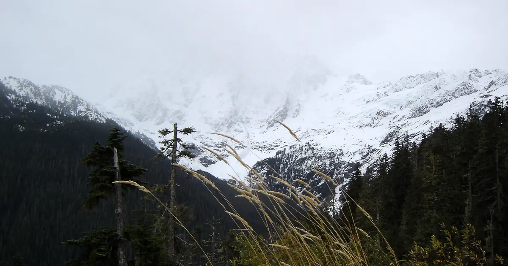

Mt. Baker en diciembre: la escapada en coche más nevada y barata de Washington
Si solo vais a hacer una escapada de esquí en diciembre en el Noroeste, apuntad hacia la Mount Baker Highway. En nuestro historial de nieve de 46 inviernos, a media montaña en Mt. Baker hubo al menos 20 in (50 cm) de nieve el 15 de diciembre en el 93 % de los casos, y un forfait de adulto entre semana cuesta 98,80 $, comprado en taquilla el mismo día.
Consulta la previsión de nieve en tiempo real de Mt Baker en la app SnowScopeEspesor de nieve, alertas de nieve polvo y mapa 3D, gratis.El último pueblo es Glacier, y después todo se vuelve blanco
Mt. Baker no es un pueblo de estación. Se conduce hacia el este desde Bellingham, se repostar en Glacier y se sube hasta una base a unos 3630 ft (1106 m). El terreno cartografiado es compacto: 10 remontes y unas 14 mi (23 km) de pistas, que culminan cerca de 5100 ft (1556 m). Cifras modestas sobre el papel, pero este rincón de las North Cascades acumula nieve como pocos lugares en los 48 estados contiguos.
En un invierno típico de nuestro historial, la nieve duradera llega a media montaña a finales de octubre. En los primeros días de diciembre, el refugio ya suele estar en pleno invierno.

Cómo es un diciembre típico
El 1 de diciembre, el invierno mediano de nuestro registro tiene 31 in (79 cm) a media montaña, hacia 4370 ft (1331 m). Para el 15 de diciembre eso sube a 28 in (72 cm) en la base, 46 in (116 cm) a media montaña y 69 in (176 cm) en la cima. El día de Navidad, media montaña está en 57 in (145 cm).
Semana a semana el panorama es igual de estable. La proporción de inviernos con buena nieve (una media semanal de 20 in, 50 cm, o más) a media montaña es del 85 % en la primera semana de diciembre, 91 % en la segunda, 98 % en la tercera y 100 % en la semana de Navidad.

El forfait: a la antigua, y más barato de lunes a jueves
Mt. Baker lo mantiene simple. El forfait de adulto (16-59 años) cuesta 115,42 $ en días punta, de viernes a domingo y festivos, y 98,80 $ entre semana, de lunes a jueves fuera de festivos, impuestos no incluidos. No hay venta online, ni compra anticipada, ni forfait de varios días: se compra el mismo día.
Eso deja clara la jugada de ahorro. Una escapada en martes o miércoles ahorra la diferencia entre ambas tarifas y además regala un aparcamiento más vacío y una subida más tranquila por la carretera.
Cómo se compara con White Pass y Timberline
White Pass, al sur del Mount Rainier, es el rival en precio: su forfait de adulto online empieza en 69 $ entre semana y 89 $ en días punta, pero sube a medida que se venden las fechas, hasta 99 $ y 119 $. Su media montaña tenía 40 in (102 cm) en un 15 de diciembre típico, con 20 in (50 cm) o más en el 87 % de los inviernos.
Timberline, en el Mt. Hood, tiene sobre el papel una media montaña más profunda, 52 in (132 cm) en un 15 de diciembre típico, pero solo alcanzó 20 in (50 cm) en el 78 % de los inviernos, y allí un forfait de día completo para adultos cuesta 129 $ entre semana y 161 $ en días punta. Para tener nieve segura por cada dólar a principios de diciembre, Mt. Baker es difícil de superar.
La parte honesta: los años flojos existen
Un invierno flojo, el que toca uno de cada diez años, deja igualmente unos 25 in (63 cm) a media montaña el 15 de diciembre. El invierno pasado fue uno de los flojos: 16 in (42 cm) a media montaña en esa fecha.
Los inviernos recientes también arrancan algo más despacio que los antiguos. En los primeros 15 inviernos de nuestro registro (1980-81 a 1994-95), el valor mediano el 15 de diciembre era de 52 in (131 cm) a media montaña, y todos y cada uno tuvieron 20 in o más. En los últimos 15 inviernos (2011-12 a 2025-26), fue de 41 in (104 cm), con el 87 % por encima de 20 in. Sigue siendo una apuesta muy buena, solo que ya no es un cheque en blanco.
Consejos para esquiadores
- Planead una escapada de lunes a jueves: es el forfait más barato y el día más tranquilo.
- Llevad tarjeta o efectivo y comprad en taquilla: los forfaits solo se venden el mismo día.
- Llevad cadenas o neumáticos de nieve en la Mount Baker Highway, y consultad el estado de la carretera antes de salir de Glacier.
- Apuntad a mediados de diciembre o más tarde: a partir de la tercera semana, casi todos los inviernos pasados tuvieron buena nieve a media montaña.
- ¿Vais a esquiar fuera de pista? Leed antes el parte de aludes: la nieve abundante y temprana puede ser inestable.
Referencias y créditos
- Mt. Baker Ski Area, daily lift tickets (official) www.mtbaker.us/tickets-and-passes/daily-lift-tickets/
- White Pass, online day tickets 2026/27 (official) skiwhitepass.com/online-day-ticket-sales
- Timberline Lodge, winter lift tickets 2026/2027 (official) www.timberlinelodge.com/activities/winter/lift-tickets/
- OpenSkiMap (mapped lifts and runs) openskimap.org/
- avalanche.org, US avalanche centers and forecasts avalanche.org/
Sobre estas cifras
Cifras de nieve: histórico de nieve de SnowScope, 46 inviernos pasados (1980-81 a 2025-26) en las alturas indicadas (base, media, cima), una reconstrucción de la nieve pasada para una zona corregida por altitud (basada en ERA5-Land; Snow_Hydro 1 km para Marruecos), no los partes de la estación. Nieve actual: el mapa de SnowScope. Remontes, pistas y alturas: cartografía OpenSkiMap. Precios: las páginas oficiales listadas abajo, consultadas el 13 de noviembre de 2026; los precios dinámicos cambian con la fecha y la demanda.
Boletines oficiales de aludes: avalanche.org (US national portal)
Citar este informe
Para investigación, docencia o prensa: cifras y gráficos reutilizables libremente bajo CC BY 4.0 con esta cita.
SnowScope (2026), Mt. Baker en diciembre: la escapada en coche más nevada y barata de Washington, https://snowscope.app/blog/es/2026/11/mt-baker-december-ski-trip-cheap-2026.html, consultado el 2026-11-14
SnowScope (Atlas Labs). (2026, November 14). Mt. Baker en diciembre: la escapada en coche más nevada y barata de Washington. SnowScope snow reports. https://snowscope.app/blog/es/2026/11/mt-baker-december-ski-trip-cheap-2026.html
BibTeX
@misc{snowscope2026mtbakerdecemberskitripch,
author = {{SnowScope (Atlas Labs)}},
title = {Mt. Baker en diciembre: la escapada en coche más nevada y barata de Washington},
year = {2026},
month = nov,
howpublished = {\url{https://snowscope.app/blog/es/2026/11/mt-baker-december-ski-trip-cheap-2026.html}},
note = {Published 2026-11-14 13:07 UTC; accessed 2026-11-14}
}· CC BY 4.0 · Métodos, datos y herramientas →
Mt Baker: nieve y temperatura según la altura, este invierno vs el pasado (herramientas) →
Sigue Mt Baker
Gratis: un aviso cuando llega la nieve y la previsión cada mañana.
Más partes de nieve

Mt Baker recibió 11 in (27 cm) de nieve nueva en las últimas 72 horas, 4 in (11 cm) de ellos en las últimas 24 horas. Ahora tiene unos 19 in (47 cm) …

Mt Baker recibió 13 in (32 cm) de nieve nueva en las últimas 72 horas, 1 in (3 cm) de ellos en las últimas 24 horas. Ahora tiene unos 17 in (44 cm) …

Hasta el 7 de noviembre, nuestra previsión da 17 in (44 cm) en Mt Baker, 6 in (14 cm) en Crystal Mountain y 6 in (14 cm) en Stevens Pass. Las cifras …